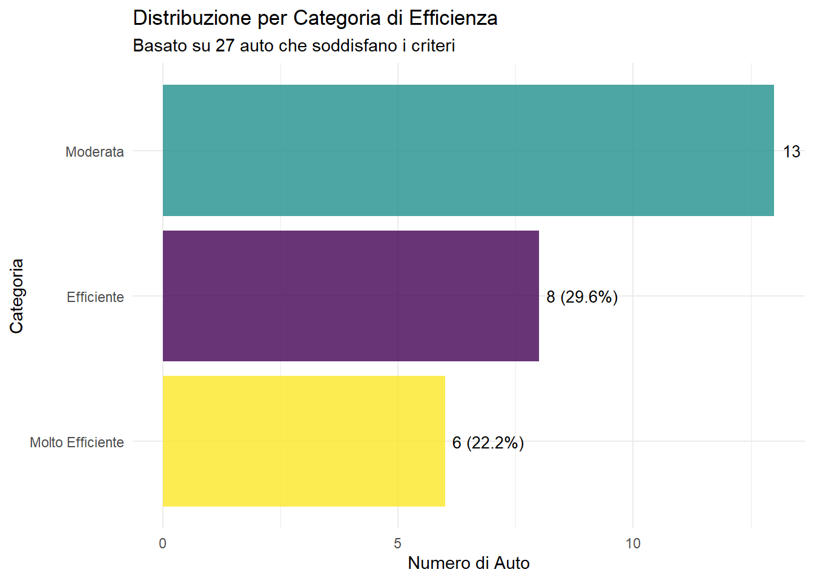
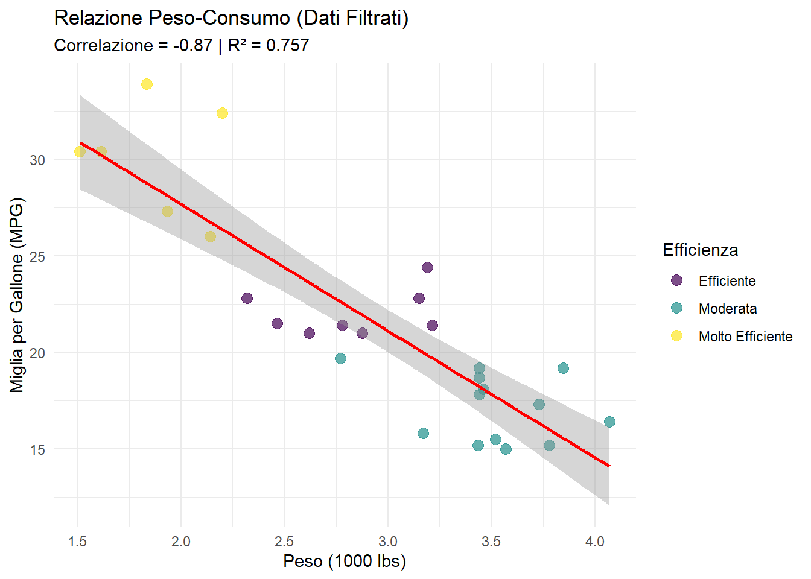

Questo report dimostra le capacità di Quarto di creare documenti dinamici che si adattano automaticamente ai parametri di input e ai dati. I parametri attuali sono:
Con i filtri applicati, stiamo analizzando 27 auto su 32 totali (84.4% del dataset).
Statistiche Dinamiche
Riepilogo Automatico
Code
# Statistiche che si aggiornano automaticamenteavg_mpg <-round(mean(mtcars_filtered$mpg), 2)max_hp <-max(mtcars_filtered$hp)min_weight <-round(min(mtcars_filtered$wt), 2)most_common_cyl <-names(sort(table(mtcars_filtered$cyl), decreasing =TRUE))[1]# Crea tabella riassuntivasummary_stats <-data.frame(Metrica =c("MPG Medio", "Potenza Massima", "Peso Minimo", "Cilindri Più Comuni"),Valore =c(paste(avg_mpg, "mpg"),paste(max_hp, "hp"), paste(min_weight, "migliaia di lbs"),paste(most_common_cyl, "cilindri") ),Descrizione =c("Consumo medio del subset filtrato","Auto più potente nel subset","Auto più leggera nel subset", "Configurazione cilindri prevalente" ))kable(summary_stats, caption =paste("Statistiche aggiornate al", params$analysis_date)) %>%kable_styling(bootstrap_options =c("striped", "hover"))
Warning: 'xfun::attr()' is deprecated.
Use 'xfun::attr2()' instead.
See help("Deprecated")
Statistiche aggiornate al 2024-10-24
Metrica
Valore
Descrizione
MPG Medio
21.47 mpg
Consumo medio del subset filtrato
Potenza Massima
335 hp
Auto più potente nel subset
Peso Minimo
1.51 migliaia di lbs
Auto più leggera nel subset
Cilindri Più Comuni
4 cilindri
Configurazione cilindri prevalente
Distribuzione Dinamica per Categorie
Code
# Conta auto per categoriacategory_counts <- mtcars_filtered %>%count(efficiency_category) %>%mutate(percentage =round(n/sum(n)*100, 1))# Grafico che si adatta al contenutoggplot(category_counts, aes(x =reorder(efficiency_category, n), y = n, fill = efficiency_category)) +geom_col(alpha =0.8, show.legend =FALSE) +geom_text(aes(label =paste0(n, " (", percentage, "%)")), hjust =-0.1, size =3.5) +scale_fill_viridis_d() +coord_flip() +labs(title ="Distribuzione per Categoria di Efficienza",subtitle =paste("Basato su", n_cars, "auto che soddisfano i criteri"),x ="Categoria", y ="Numero di Auto" ) +theme_minimal()

Distribuzione delle 27 auto per categoria di efficienza
Analisi Condizionale
Code
# Analisi che varia a seconda dei dati disponibilihas_manual <-any(mtcars_filtered$am ==1)has_automatic <-any(mtcars_filtered$am ==0)if(has_manual && has_automatic) { analysis_type <-"Confronto tra trasmissioni" comparison_available <-TRUE} else { analysis_type <-"Analisi di una sola trasmissione" comparison_available <-FALSE}
Confronto tra trasmissioni
Code
if(comparison_available) {# Se abbiamo entrambi i tipi, facciamo il confronto t_test_result <-t.test(mpg ~ am, data = mtcars_filtered) p_value <-round(t_test_result$p.value, 4)# Grafico di confronto p <-ggplot(mtcars_filtered, aes(x = transmission, y = mpg, fill = transmission)) +geom_boxplot(alpha =0.7) +geom_jitter(width =0.2, alpha =0.6) +scale_fill_brewer(type ="qual", palette ="Set2") +labs(title ="Confronto MPG per Tipo di Trasmissione",subtitle =paste("t-test p-value =", p_value),x ="Trasmissione", y ="MPG" ) +theme_minimal() +theme(legend.position ="none")print(p)} else {# Se abbiamo solo un tipo, mostriamo la distribuzione transmission_type <-ifelse(has_manual, "manuale", "automatica")cat("Nel subset filtrato sono presenti solo auto con trasmissione", transmission_type, ".\n")# Grafico della distribuzione p <-ggplot(mtcars_filtered, aes(x = mpg)) +geom_histogram(bins =8, fill ="steelblue", alpha =0.7, color ="white") +geom_density(aes(y = ..density.. * n_cars *diff(range(mpg))/8), color ="red", size =1) +labs(title =paste("Distribuzione MPG - Trasmissione", stringr::str_to_title(transmission_type)),x ="MPG", y ="Frequenza" ) +theme_minimal()print(p)}
Il dataset filtrato presenta le seguenti caratteristiche dinamiche:
L’auto più efficiente è la Toyota Corolla con 33.9 MPG
L’auto più potente è la Maserati Bora con 335 HP
Il peso medio è di 2.95 migliaia di lbs
Il 48.1% delle auto ha trasmissione manuale
Grafico di Correlazione Dinamico
Code
# Calcola correlazionecorrelation <-round(cor(mtcars_filtered$wt, mtcars_filtered$mpg), 3)# Modello di regressionemodel <-lm(mpg ~ wt, data = mtcars_filtered)r_squared <-round(summary(model)$r.squared, 3)# Grafico con statistiche dinamicheggplot(mtcars_filtered, aes(x = wt, y = mpg)) +geom_point(aes(color = efficiency_category), size =3, alpha =0.7) +geom_smooth(method ="lm", se =TRUE, color ="red") +scale_color_viridis_d(name ="Efficienza") +labs(title ="Relazione Peso-Consumo (Dati Filtrati)",subtitle =paste("Correlazione =", correlation, "| R² =", r_squared),x ="Peso (1000 lbs)", y ="Miglia per Gallone (MPG)" ) +theme_minimal()
`geom_smooth()` using formula = 'y ~ x'

Correlazione peso-consumo per 27 auto filtrate
Avvisi Dinamici
Code
# Genera avvisi basati sui dati
Warning
Suggerimento
Sono presenti 6 auto molto efficienti (≥25 MPG) nel dataset filtrato. Considerare queste per analisi di benchmark.
Metadati del Report
Warning: 'xfun::attr()' is deprecated.
Use 'xfun::attr2()' instead.
See help("Deprecated")
Metadati del Report Dinamico
Elemento
Valore
Data Generazione
2025-10-24 15:51:32.103947
Parametri MPG
≥ 15
Parametri Cilindri
≤ 8
Osservazioni Incluse
27 su 32
Percentuale Dataset
84.4%
Questo report è stato generato automaticamente con Quarto. I parametri possono essere modificati nel YAML header per ottenere analisi diverse dello stesso dataset.
Come Modificare i Parametri
Per generare una versione diversa di questo report, modifica i parametri nel YAML header:
params:min_mpg:20 # Cambia il filtro MPG minimomax_cylinders:6 # Cambia il numero massimo di cilindrianalysis_date:"2024-01-15" # Cambia la data
---title: "Report Dinamico e Automatizzato"format: html: code-fold: show toc: trueparams: min_mpg: 15 max_cylinders: 8 analysis_date: "2024-10-24"---# Report Dinamico con ParametriQuesto report dimostra le capacità di Quarto di creare documenti dinamici che si adattano automaticamente ai parametri di input e ai dati. I parametri attuali sono:- **MPG Minimo**: `r params$min_mpg`- **Numero Massimo di Cilindri**: `r params$max_cylinders`- **Data di Analisi**: `r params$analysis_date`## Preparazione Dinamica dei Dati```{r setup}#| warning: false#| message: false# Librerielibrary(ggplot2)library(dplyr)library(knitr)library(kableExtra)library(plotly)library(DT)library(lubridate)# Carica e filtra dati basandosi sui parametridata("mtcars")# Applica filtri dinamicimtcars_filtered <- mtcars %>%filter( mpg >= params$min_mpg, cyl <= params$max_cylinders ) %>%mutate(car_name =rownames(.),transmission =ifelse(am ==1, "Manuale", "Automatico"),efficiency_category =case_when( mpg >=25~"Molto Efficiente", mpg >=20~"Efficiente", mpg >=15~"Moderata",TRUE~"Bassa Efficienza" ) )# Messaggio dinamico sui datin_cars <-nrow(mtcars_filtered)n_total <-nrow(mtcars)percent_included <-round(n_cars/n_total *100, 1)```::: {.callout-info}## Dati SelezionatiCon i filtri applicati, stiamo analizzando **`r n_cars`** auto su **`r n_total`** totali (**`r percent_included`%** del dataset).:::## Statistiche Dinamiche### Riepilogo Automatico```{r dynamic-summary}# Statistiche che si aggiornano automaticamenteavg_mpg <-round(mean(mtcars_filtered$mpg), 2)max_hp <-max(mtcars_filtered$hp)min_weight <-round(min(mtcars_filtered$wt), 2)most_common_cyl <-names(sort(table(mtcars_filtered$cyl), decreasing =TRUE))[1]# Crea tabella riassuntivasummary_stats <-data.frame(Metrica =c("MPG Medio", "Potenza Massima", "Peso Minimo", "Cilindri Più Comuni"),Valore =c(paste(avg_mpg, "mpg"),paste(max_hp, "hp"), paste(min_weight, "migliaia di lbs"),paste(most_common_cyl, "cilindri") ),Descrizione =c("Consumo medio del subset filtrato","Auto più potente nel subset","Auto più leggera nel subset", "Configurazione cilindri prevalente" ))kable(summary_stats, caption =paste("Statistiche aggiornate al", params$analysis_date)) %>%kable_styling(bootstrap_options =c("striped", "hover"))```### Distribuzione Dinamica per Categorie```{r dynamic-distribution}#| fig-cap: !expr paste("Distribuzione delle", n_cars, "auto per categoria di efficienza")# Conta auto per categoriacategory_counts <- mtcars_filtered %>%count(efficiency_category) %>%mutate(percentage =round(n/sum(n)*100, 1))# Grafico che si adatta al contenutoggplot(category_counts, aes(x =reorder(efficiency_category, n), y = n, fill = efficiency_category)) +geom_col(alpha =0.8, show.legend =FALSE) +geom_text(aes(label =paste0(n, " (", percentage, "%)")), hjust =-0.1, size =3.5) +scale_fill_viridis_d() +coord_flip() +labs(title ="Distribuzione per Categoria di Efficienza",subtitle =paste("Basato su", n_cars, "auto che soddisfano i criteri"),x ="Categoria", y ="Numero di Auto" ) +theme_minimal()```## Analisi Condizionale```{r conditional-analysis}# Analisi che varia a seconda dei dati disponibilihas_manual <-any(mtcars_filtered$am ==1)has_automatic <-any(mtcars_filtered$am ==0)if(has_manual && has_automatic) { analysis_type <-"Confronto tra trasmissioni" comparison_available <-TRUE} else { analysis_type <-"Analisi di una sola trasmissione" comparison_available <-FALSE}```### `r analysis_type````{r transmission-analysis}if(comparison_available) {# Se abbiamo entrambi i tipi, facciamo il confronto t_test_result <-t.test(mpg ~ am, data = mtcars_filtered) p_value <-round(t_test_result$p.value, 4)# Grafico di confronto p <-ggplot(mtcars_filtered, aes(x = transmission, y = mpg, fill = transmission)) +geom_boxplot(alpha =0.7) +geom_jitter(width =0.2, alpha =0.6) +scale_fill_brewer(type ="qual", palette ="Set2") +labs(title ="Confronto MPG per Tipo di Trasmissione",subtitle =paste("t-test p-value =", p_value),x ="Trasmissione", y ="MPG" ) +theme_minimal() +theme(legend.position ="none")print(p)} else {# Se abbiamo solo un tipo, mostriamo la distribuzione transmission_type <-ifelse(has_manual, "manuale", "automatica")cat("Nel subset filtrato sono presenti solo auto con trasmissione", transmission_type, ".\n")# Grafico della distribuzione p <-ggplot(mtcars_filtered, aes(x = mpg)) +geom_histogram(bins =8, fill ="steelblue", alpha =0.7, color ="white") +geom_density(aes(y = ..density.. * n_cars *diff(range(mpg))/8), color ="red", size =1) +labs(title =paste("Distribuzione MPG - Trasmissione", stringr::str_to_title(transmission_type)),x ="MPG", y ="Frequenza" ) +theme_minimal()print(p)}```## Tabella Interattiva Filtrata```{r dynamic-table}# Tabella che mostra solo i dati filtratimtcars_filtered %>%select(car_name, mpg, hp, wt, cyl, transmission, efficiency_category) %>%datatable(caption =paste("Dataset filtrato -", n_cars, "auto selezionate"),options =list(pageLength =min(10, n_cars),scrollX =TRUE,dom ='Bfrtip',buttons =c('copy', 'csv') ),extensions ='Buttons',filter ="top" ) %>%formatRound(columns =c("mpg", "hp", "wt"), digits =1) %>%formatStyle("efficiency_category",backgroundColor =styleEqual(c("Bassa Efficienza", "Moderata", "Efficiente", "Molto Efficiente"),c("#fee5d9", "#fcbba1", "#fc9272", "#de2d26") ) )```## Calcoli Dinamici in LineaIl dataset filtrato presenta le seguenti caratteristiche dinamiche:- L'auto più efficiente è la **`r mtcars_filtered$car_name[which.max(mtcars_filtered$mpg)]`** con **`r max(mtcars_filtered$mpg)` MPG**- L'auto più potente è la **`r mtcars_filtered$car_name[which.max(mtcars_filtered$hp)]`** con **`r max(mtcars_filtered$hp)` HP**- Il peso medio è di **`r round(mean(mtcars_filtered$wt), 2)` migliaia di lbs**- Il `r round(mean(mtcars_filtered$am) * 100, 1)`% delle auto ha trasmissione manuale## Grafico di Correlazione Dinamico```{r dynamic-correlation}#| fig-cap: !expr paste("Correlazione peso-consumo per", n_cars, "auto filtrate")# Calcola correlazionecorrelation <-round(cor(mtcars_filtered$wt, mtcars_filtered$mpg), 3)# Modello di regressionemodel <-lm(mpg ~ wt, data = mtcars_filtered)r_squared <-round(summary(model)$r.squared, 3)# Grafico con statistiche dinamicheggplot(mtcars_filtered, aes(x = wt, y = mpg)) +geom_point(aes(color = efficiency_category), size =3, alpha =0.7) +geom_smooth(method ="lm", se =TRUE, color ="red") +scale_color_viridis_d(name ="Efficienza") +labs(title ="Relazione Peso-Consumo (Dati Filtrati)",subtitle =paste("Correlazione =", correlation, "| R² =", r_squared),x ="Peso (1000 lbs)", y ="Miglia per Gallone (MPG)" ) +theme_minimal()```## Avvisi Dinamici```{r dynamic-alerts}# Genera avvisi basati sui dati```::: {.callout-warning}```{r}#| echo: false#| results: asisif(n_cars <10) {cat("## Attenzione!\nIl dataset filtrato contiene meno di 10 osservazioni. I risultati potrebbero non essere statisticamente significativi.")} elseif(n_cars <20) {cat("## Nota\nIl dataset filtrato contiene un numero limitato di osservazioni (", n_cars, "). Interpretare i risultati con cautela.")}```:::::: {.callout-tip}```{r}#| echo: false#| results: asisefficient_cars <-sum(mtcars_filtered$mpg >=25)if(efficient_cars >0) {cat("## Suggerimento\nSono presenti", efficient_cars, "auto molto efficienti (≥25 MPG) nel dataset filtrato. Considerare queste per analisi di benchmark.")}```:::## Metadati del Report```{r metadata}#| echo: false# Informazioni sul reportreport_info <-data.frame(Elemento =c("Data Generazione", "Parametri MPG", "Parametri Cilindri", "Osservazioni Incluse", "Percentuale Dataset"),Valore =c(as.character(Sys.time()),paste("≥", params$min_mpg),paste("≤", params$max_cylinders),paste(n_cars, "su", n_total),paste0(percent_included, "%") ))kable(report_info, caption ="Metadati del Report Dinamico") %>%kable_styling(bootstrap_options ="striped", full_width =FALSE)```---*Questo report è stato generato automaticamente con Quarto. I parametri possono essere modificati nel YAML header per ottenere analisi diverse dello stesso dataset.*## Come Modificare i ParametriPer generare una versione diversa di questo report, modifica i parametri nel YAML header:```yamlparams:min_mpg:20 # Cambia il filtro MPG minimomax_cylinders:6 # Cambia il numero massimo di cilindrianalysis_date:"2024-01-15" # Cambia la data```Oppure genera il report da R con:```rquarto::quarto_render("report-dinamico.qmd", execute_params =list(min_mpg =20,max_cylinders =6 ))```